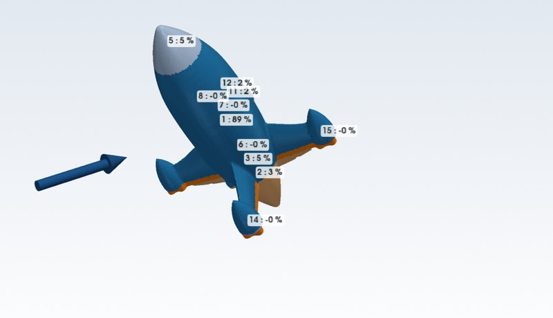
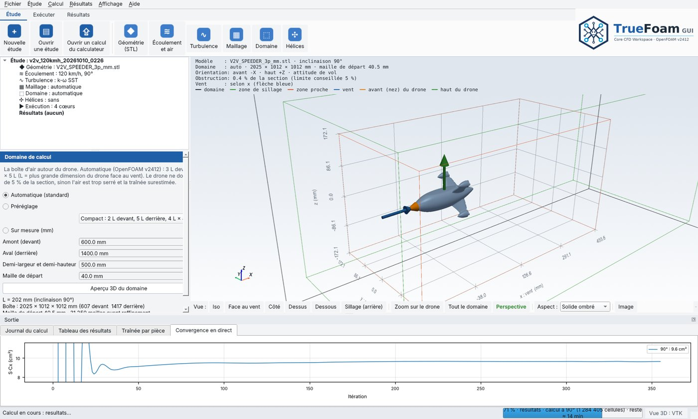
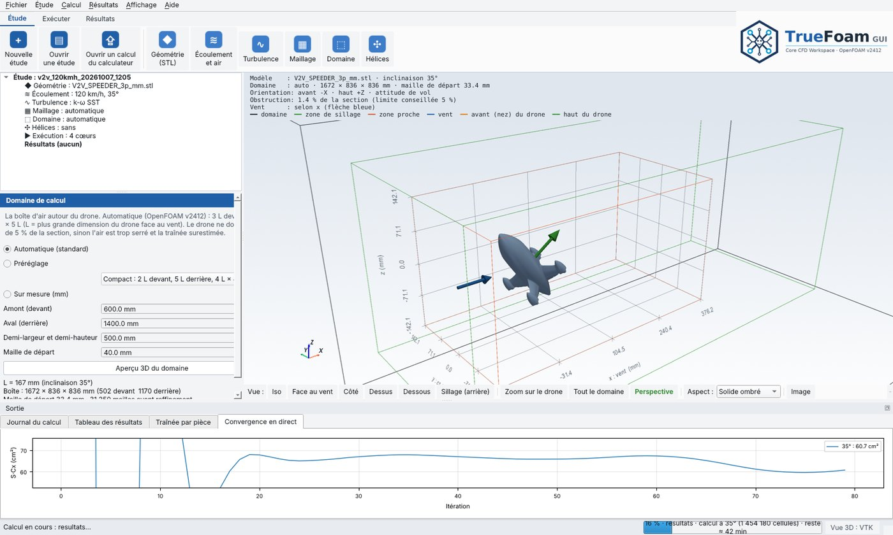
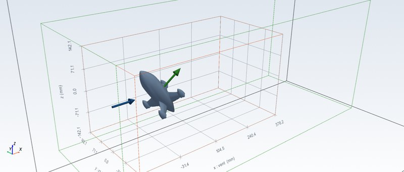
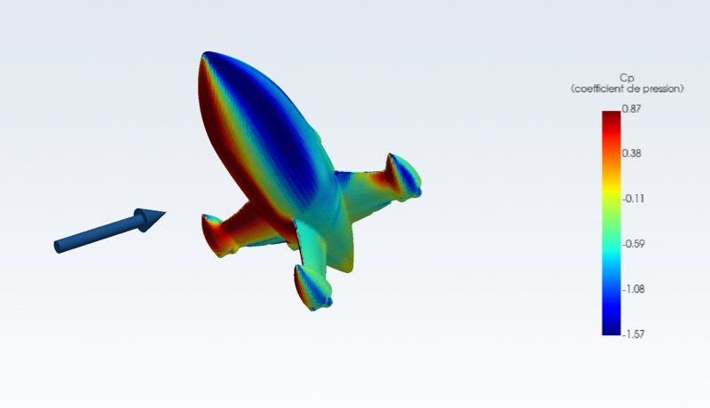
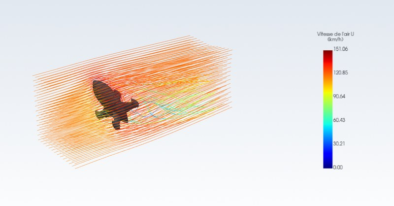
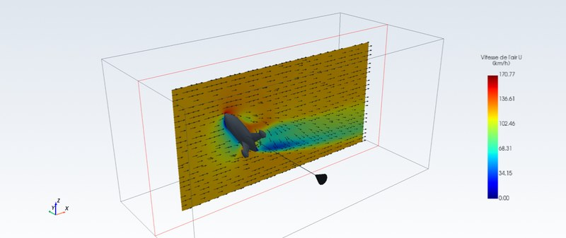

Traînée et portance
Traînée et portance en N, S·Cx et Cx équivalent, pour la vitesse et l'air choisis (atmosphère standard, altitude et température, ou ρ et ν imposés).
La puissance de la CFD aéronautique associée à la rigueur scientifique opérée sur votre station de travail.
Traînée, portance et écoulement autour d'un objet isolé, fourni en STL fermé : drone, aile, carénage, pièce, maquette de prototype, sans ligne de commande. Application phare : les drones FPV ; validation publiée à ce jour sur des drones et des formes simples.

De vrais calculs, du drone coloré par la pression aux traits d'air qui le contournent : V2V Speeder 3″ à 120 km/h, fuselage à plat face au vent (0°) puis incliné à 45°. Images rendues à partir des résultats de TrueFoam GUI ; les deux calculs sont convergés (réglages par défaut, 1 000 itérations à 45°).
Captures réelles de TrueFoam GUI sur le drone d'essai V2V Speeder 3″, à 35° et 120 km/h.



Les études que TrueFoam GUI sait faire aujourd'hui, sur un objet en STL placé dans un courant d'air. L'interface parle de « drone » (avant, haut, inclinaison), mais toute forme fermée se calcule de la même façon.

Traînée et portance en N, S·Cx et Cx équivalent, pour la vitesse et l'air choisis (atmosphère standard, altitude et température, ou ρ et ν imposés).

Plusieurs inclinaisons en une étude, polaire de 0 à 90°, balayage de vitesses et loi F = k·V².

Cp et pression sur toute la surface, frottement de l'air, pour voir d'où vient la traînée.

Coupes, coupe libre à la souris, lignes de courant animées, tourbillons, profils le long d'une ligne.
Traînée moyenne et oscillation, fréquence du sillage et nombre de Strouhal, sillage au cours du temps.
Disques d'action : perte de poussée et effet du souffle sur la traînée. En essai pales en rotation : poussée, couple et puissance par hélice.

Le même calcul sur trois maillages pour vérifier que le résultat n'en dépend plus ; zones de raffinement et bilan de qualité.

Deux calculs comparés point par point, et traînée par pièce pour savoir où gagner.
Chaque étape est guidée, de l'import du fichier au rapport.
TrueFoam GUI pas à pas, de l'installation au rapport. Captures réelles du logiciel, avec le drone d'essai V2V Speeder 3″.

Ruban Exécuter : le bouton du moteur dit s'il est prêt.


Captures d'un vrai calcul fait avec les réglages par défaut (5 couches limites) : V2V Speeder 3″ à 35°, 120 km/h, 1,45 million de cellules, convergé, S·Cx 62,6 cm² (voir Validation).


Core CFD Workspace pour OpenFOAM® v2412. La CFD sur PC, sans ligne de commande.

TrueFoam GUI est un logiciel propriétaire (code source non publié) qui calcule l'écoulement de l'air autour d'un objet en STL (drone ou toute autre forme fermée) sur votre PC, sans connexion, en s'appuyant sur OpenFOAM v2412. OpenFOAM est téléchargé par l'utilisateur (image Docker officielle) et lancé comme programme séparé : il n'est ni inclus ni modifié par TrueFoam GUI. L'interface prépare les fichiers de calcul, suit le calcul et montre les résultats.
Pour qui le préfère, les résultats s'ouvrent aussi dans ParaView, logiciel de visualisation externe et gratuit de Kitware, que l'utilisateur installe lui-même s'il le souhaite : ParaView n'est pas livré avec TrueFoam GUI.
Logiciel non signé : Windows peut afficher « Windows a protégé votre ordinateur ». Cliquer sur « Informations complémentaires », puis « Exécuter quand même ».
This offering is not approved or endorsed by OpenCFD Limited, producer and distributor of the OpenFOAM software via www.openfoam.com, and owner of the OPENFOAM® and OpenCFD® trade marks.
Cette offre n'est ni approuvée ni soutenue par OpenCFD Limited, producteur et distributeur du logiciel OpenFOAM via www.openfoam.com, et propriétaire des marques OPENFOAM® et OpenCFD®.
Le solveur CFD propriétaire de la famille TrueFoam.
TrueFoam Engine est le solveur CFD propriétaire de la famille TrueFoam, en développement et en validation. Il n'est pas diffusé : pour vos calculs, utilisez TrueFoam GUI.
Son interface reprend l'environnement de travail de TrueFoam GUI : étude guidée, vue 3D et résultats viennent du même squelette d'interface.
La même interface que TrueFoam GUI, pour plusieurs versions d'OpenFOAM®.
Pour les utilisateurs qui veulent rester sur OpenFOAM sur leur PC, TrueFoam GUI Multi-Core CFD reprend l'interface de TrueFoam GUI et la rend compatible avec plusieurs versions d'OpenFOAM, chacune téléchargée par l'utilisateur (images Docker officielles) et lancée comme programme séparé, sans être incluse ni modifiée. L'interface détecte les images présentes sur le PC, propose la version dans le panneau du moteur et enregistre la version utilisée avec chaque calcul. Ceux qui travaillent avec ParaView, logiciel externe de Kitware qu'ils installent eux-mêmes, peuvent continuer à l'utiliser à côté.
Ce produit est en développement. Chaque version d'OpenFOAM est validée avant d'être proposée : la série cube, plaque, cylindre, sphère et le drone V2V doivent redonner les chiffres de la v2412 à quelques % près. Une version non validée n'est pas proposée.
TrueFoam GUI (public) reste la version en service pendant ce développement.
This offering is not approved or endorsed by OpenCFD Limited, producer and distributor of the OpenFOAM software via www.openfoam.com, and owner of the OPENFOAM® and OpenCFD® trade marks.
Cette offre n'est ni approuvée ni soutenue par OpenCFD Limited, producteur et distributeur du logiciel OpenFOAM via www.openfoam.com, et propriétaire des marques OPENFOAM® et OpenCFD®.
Trois produits, une même façon de travailler : l'étude guidée, la vue 3D et les résultats viennent du même squelette d'interface.
| Produit | Statut | Moteur de calcul | Public visé |
|---|---|---|---|
| TrueFoam Engine | En développement, non diffusé | TrueFoam Engine, solveur propriétaire | — |
| TrueFoam GUI | En service | OpenFOAM® v2412, téléchargé par l'utilisateur, lancé comme programme séparé | Concepteurs de drones FPV et de projets aérodynamiques sur PC Windows ; utilisateurs du calculateur |
| TrueFoam GUI Multi-Core CFD | En développement | Plusieurs versions d'OpenFOAM : openfoam.com, puis openfoam.org selon validation | Utilisateurs qui veulent rester sur OpenFOAM |
Cette section concerne TrueFoam GUI et ses calculs faits avec OpenFOAM® v2412. Les chiffres viennent de la fiche de validation du projet, à 120 km/h. La validation publiée porte sur des formes simples (cube, plaque, cylindre, sphère) et sur des drones ; les points faibles connus sont publiés avec le reste.
| Forme | Maillage | Cx calculé | Référence | Écart |
|---|---|---|---|---|
| Cube 100 mm | 4,5,3 | 1,17 | ≈ 1,05 | +11 % |
| Plaque 100 × 100 × 5 mm | 4,5,3 | 1,22 | ≈ 1,17 | +4 % |
| Cylindre Ø 30 × 200 mm, en travers | 4,5,3 | 0,42 (non convergé) | ≈ 0,8 | −48 % |
| Sphère Ø 50 mm | 4,5,3 | 0,08 | ≈ 0,47 | −83 % |
Références : valeurs classiques de soufflerie (Hoerner). Inclinaison 0°, air ρ = 1,2 kg/m³.
Les pièces à arêtes vives (cadre carbone, plaques) : le décollement est fixé par les arêtes et l'écart baisse nettement avec le maillage (plaque : +15 % en maillage grossier, +4 % en maillage fin).
Les pièces rondes et lisses (cloches moteur, caméras, antennes) sont sous-estimées. Sans couches limites, la couche limite n'est pas résolue : l'air reste collé trop longtemps (sphère : décollement vers 155° au lieu de 80–85°). Avec 5 couches limites, le Cx de la sphère passe de 0,09 à 0,27 et celui du cylindre de 0,40 à 0,53, encore sous les références.
| V2V 3″, 35°, 120 km/h | Cellules | S·Cx |
|---|---|---|
| Sans couches limites | 1 200 581 | 49,5 cm² |
| 5 couches | 1 412 027 | 62,3 cm² |
| 5 couches, pose améliorée | 1 454 602 | 62,9 cm² |
| 5 couches, moteur final | 1 455 273 | 62,6 cm² |
Tous ces calculs sont convergés. Règle suivie par le logiciel : un calcul divergé ou non convergé est signalé comme tel, et ce qui n'est pas calculé n'est pas affiché.
Les téléchargements et le calculateur en ligne.